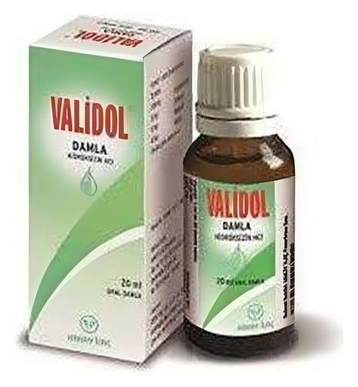

Validol 20 ml Damla

Ne için kullanılır
KT · Bölüm 1VALİDOL, berrak ve renksiz bir çözeltidir. VALİDOL, 20 ml’lik damlalıklı ve bal renkli cam şişelerde kullanıma sunulur.
VALİDOL; asabiyet, heyecan, anksiyete (kaygı) gibi duygusal bozukluklarının tedavisinde, cerrahi girişimler için ameliyattan önce anksiyeteyi (kaygı) gidermek için, allerjik nedenlere bağlı kaşıntı belirtisinin tedavisinde kullanılır.